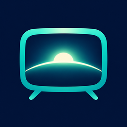
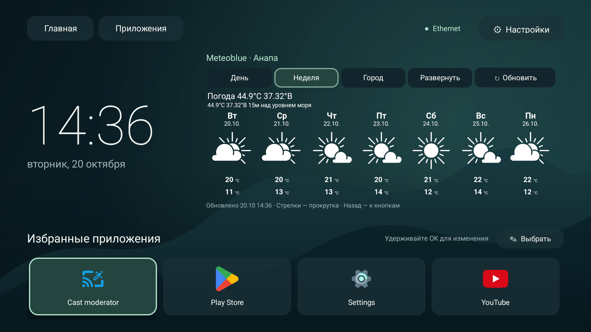

Ваши приложения
Выберите, что оставить на главном экране, и расставьте карточки в удобном порядке. Все остальные приложения доступны в общем списке. При возврате домой нужная карточка уже в фокусе.
Удерживайте OK, чтобы изменить карточку.

horizon tvНужные приложения, большие часы и погода.
Удобно с пульта. Спокойно на экране.
horizon tv / главный экран

01 / возможности
Выберите, что оставить на главном экране, и расставьте карточки в удобном порядке. Все остальные приложения доступны в общем списке. При возврате домой нужная карточка уже в фокусе.
Удерживайте OK, чтобы изменить карточку.
Большие часы и Яндекс Погода для выбранного города. Встроенная страница с прогнозом на день или неделю, смена города и раскрытие на весь экран. Без API-ключа.
Перезагрузка от 15 минут до 6 часов или вручную.
Быстрый переход к сети, Bluetooth, звуку и изображению. Три темы, сетка из 4, 5 или 6 карточек, часы в формате 12 или 24 часа.
Все действия доступны с обычного пульта.
02 / установка
Один APK для Android TV и Google TV
на Android 8.0 и новее.
Откройте эту страницу на телевизоре или перенесите файл на ТВ с компьютера либо телефона.
Откройте APK файловым менеджером. Если Android попросит, разрешите установку из этого источника.
Запустите Horizon TV. Выберите приложения и город для погоды. В настройках выберите «Сделать главным экраном» и подтвердите системный запрос.
03 / полезно знать
Да, если прошивка поддерживает выбор домашнего приложения. Некоторые производители и версии Google TV ограничивают смену лаунчера. Для таких прошивок предусмотрен дополнительный режим кнопки Домой через «Специальные возможности». Он возвращает в Horizon TV при появлении штатного экрана, сохраняя заводской лаунчер включённым. Заводской лаунчер приложение не отключает.
В приложении есть кнопка «Сделать главным экраном», которая открывает системный выбор Android TV. Выберите Horizon TV и подтвердите назначение с пульта. Компьютер и ADB не требуются. Если прошивка продолжает открывать заводской экран, включите дополнительный режим «Horizon TV: кнопка Домой» в «Специальных возможностях» с пульта. Он возвращает в Horizon TV при появлении штатного лаунчера и отключается там же. Доступ к содержимому экрана не запрашивается. Физический Mi TV Stick 4K пока не проверен.
На главном экране встроена оригинальная страница Яндекс Погоды. Кнопки «День» и «Неделя» выбирают период, «Город» меняет местоположение, «Развернуть» открывает подробный просмотр. API-ключ не нужен. Для отображения требуется включённый Android System WebView. Оформление и доступность прогноза зависят от Яндекса.
Нажмите «Город» в погодном блоке либо откройте настройки погоды. Найдите город по названию или выберите определение по внешнему IP. При VPN автоматически может определиться город сервера. Координаты выбранного места передаются Яндексу; он может показать название ближайшего района.
Название города отправляется в Open-Meteo Geocoding, автоматическое определение города обращается к ipwho.is, координаты — к Яндекс Погоде. Настройки и избранное хранятся на ТВ. Horizon TV не добавляет собственную рекламу и аналитику. Встроенная страница Яндекса может содержать рекламу, cookies и собственную аналитику либо проверку подключения. Подробности — в README.
Когда доступна новая версия, в верхней панели главного экрана появляется значок ↓. Нажмите его, скачайте APK и выберите «Установить обновление». Приложение проверит контрольную сумму и откроет системное подтверждение установки. Настройки сохраняются. Проверить версию вручную можно в настройках Horizon TV. Свежий APK также всегда доступен по кнопке скачивания на этой странице.
Horizon TV создан только для Android TV и Google TV. Интерфейс рассчитан на большой горизонтальный экран и управление пультом; мобильной версии нет.
Сравните SHA-256 скачанного APK со значением в файле контрольных сумм. Сборка подписана отдельным ключом разработчика. Исходники доступны на GitHub.
horizon tv / 1.0.3
Настройте главный экран так, как удобно вам.